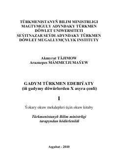

GTGadymy döwürlerden X asyra çenli türkmen edebiýatynyň we taryhynyň ylmy seljermesi.
Bu okuw gollanmasy türkmen edebiýatynyň iň gadymy döwürlerden X asyra çenli bolan ösüş ýoluny öz içine alýar. Kitapda oguz we sak-skif edebi ugurlary, gadymy türkmen döwletleri hem-de halk döredijiliginiň taryhy kökleri ylmy nukdaýnazardan seljerilýär.